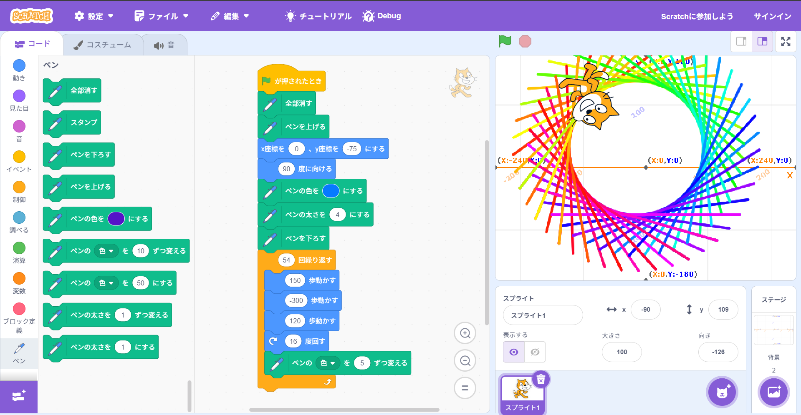
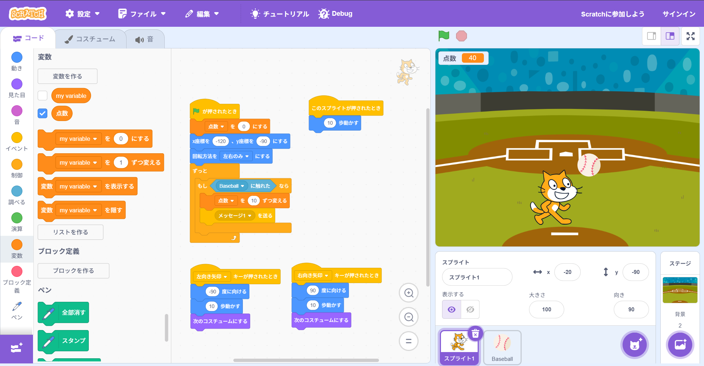

1週目のレポート ： 公大高専１年実習I-1
2b班37番 yamada0617
第1週目
1-1 サイエンスアート

1.内容
Scratchを使って、ネコの動きに合わせて線を引き図形を描くプログラミングをした。
描くたびに線の色を変えて、線を組み合わせて円のような図形をいくつか描いた。
2.感想
作ったプログラムを実行する前にどのような動きになるのかを想像して、予想通りの
動きをしたときは嬉しかった。角度や動かす距離を計算して、七角形や九角形などの
鉛筆で描くのが難しい図形をプログラミングでしてみたいと感じた。
1-2 ゲーム

1.内容
Scratchを使って、ネコを移動させて落ちてくるボールを掴むプログラムをつくった。
左右の矢印キーでネコが動き、ランダムな位置から落ちてくるボールに触れると消える
ようにプログラミングした。
2.感想
Scratchはブロックを繋げて直感的にプログラミングできるから、簡単につくることが
できて楽しかった。ボールの数が増えていったり、落ちる速度がだんだんと速くなって
きたりするプログラムをつくってみても面白そうだ思った。。
1-3 ホームページ作成
私のホームページ
1.内容
Githubを使って、特技や趣味が書かれたHomePageをつくった。HomePageを編集してタイトルや
説明を書き換えて、URLが公開されているかを確認した。また、画像ファイルをアップロードして
HomePageに画像が表示されるかを確認した。
2.感想
HomePageを一からつくるのは難しいと思うが、テンプレートを使って、一部を書き換えるのは
簡単で分かりやすかった。文字を入力して行うプログラミングは初めてで、エンジニアのような
感じがして楽しいと感じた。
各ページへのリンク
1週目のレポート
2週目のレポート
3週目のレポート
私のホームページ